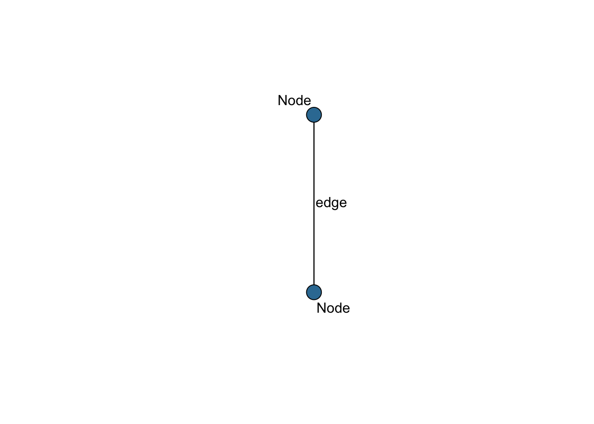

1 Introduction
1.1 What are network data?
Networks are composed of are relational data, whereby entities across all types of domains (actors, companies, species, topics, etc.) are connected based on certain kinds of relationships (friendship, trade, pollination, in-text co-occurrence, etc.)
Networks are useful for studying interdependencies; their structure suggest that entities and their connections inter-relate. Though interdependent, most (social, at least) theory is often framed in terms of selection, nodes are choosing to make connections based on certain characteristics/decision criteria, or in terms of influence, connections are affecting the characteristics/decisions of actors.
1.1.1 Features of a network
Networks are composed of ‘nodes’, the data points that represent and entity (also called vertex), and ‘edges’, representing the relationship between the nodes. These network structures are represented in Figure 1.
library(statnet)## Loading required package: tergm## Loading required package: ergm## Loading required package: network##
## 'network' 1.18.1 (2023-01-24), part of the Statnet Project
## * 'news(package="network")' for changes since last version
## * 'citation("network")' for citation information
## * 'https://statnet.org' for help, support, and other information##
## 'ergm' 4.4.0 (2023-01-26), part of the Statnet Project
## * 'news(package="ergm")' for changes since last version
## * 'citation("ergm")' for citation information
## * 'https://statnet.org' for help, support, and other information## 'ergm' 4 is a major update that introduces some backwards-incompatible
## changes. Please type 'news(package="ergm")' for a list of major
## changes.## Loading required package: networkDynamic##
## 'networkDynamic' 0.11.3 (2023-02-15), part of the Statnet Project
## * 'news(package="networkDynamic")' for changes since last version
## * 'citation("networkDynamic")' for citation information
## * 'https://statnet.org' for help, support, and other information## Registered S3 method overwritten by 'tergm':
## method from
## simulate_formula.network ergm##
## 'tergm' 4.1.1 (2022-11-07), part of the Statnet Project
## * 'news(package="tergm")' for changes since last version
## * 'citation("tergm")' for citation information
## * 'https://statnet.org' for help, support, and other information##
## Attaching package: 'tergm'## The following object is masked from 'package:ergm':
##
## snctrl## Loading required package: ergm.count##
## 'ergm.count' 4.1.1 (2022-05-24), part of the Statnet Project
## * 'news(package="ergm.count")' for changes since last version
## * 'citation("ergm.count")' for citation information
## * 'https://statnet.org' for help, support, and other information## Loading required package: sna## Loading required package: statnet.common##
## Attaching package: 'statnet.common'## The following object is masked from 'package:ergm':
##
## snctrl## The following objects are masked from 'package:base':
##
## attr, order## sna: Tools for Social Network Analysis
## Version 2.7-1 created on 2023-01-24.
## copyright (c) 2005, Carter T. Butts, University of California-Irvine
## For citation information, type citation("sna").
## Type help(package="sna") to get started.## Loading required package: tsna##
## 'statnet' 2019.6 (2019-06-13), part of the Statnet Project
## * 'news(package="statnet")' for changes since last version
## * 'citation("statnet")' for citation information
## * 'https://statnet.org' for help, support, and other information## unable to reach CRANlibrary(ggraph)## Loading required package: ggplot2library(magrittr)
library(kableExtra)# From Jared
set.seed(10) # Setting the random seed will control how networks are gnerated, included here to try and make uniform across participant's computers
e.m = sna::rgraph(2, mode="graph", tprob = .4) # 'rgraph' creates a random matrix using parameters supplied, which can be interpreted as a network (xplained more in the data section)
e.n = network::network(e.m, matrix.type = "adjacency", directed = FALSE) # The 'network' command turns data into a network object, which is required for later analyses
plot(e.n, label = "Node", edge.label = "edge", vertex.cex = 3,
vertex.col = "#357BA2FF")
Network ‘mode’: Networks can take several forms with variation in what kinds of connections can occur. One important distinction can be made between one-mode and two-mode networks. One-mode networks assumes that the nodes are all capable of making connections while two-mode networks assume that nodes of one type can only have relationships to nodes of a different type. Using the example of board members and corporations, Jasny (2012) explains: ‘Ties between the board members themselves (e.g., friendship ties) would constitute a one-mode network. Ties between companies (e.g., if the first company supplied the second with raw materials) would also be a one-mode network. The two-mode network is formed by ties from the board members, the first mode, to the boards of companies they sit on, the second mode.’ These two-mode networks, also called bipartite networks, assume that connections cannot be made within each mode.
## Warning: Using the `size` aesthetic in this geom was deprecated in ggplot2 3.4.0.
## ℹ Please use `linewidth` in the `default_aes` field and elsewhere instead.
Node attributes:In both one and two mode networks, nodes have attributes. Node attributes are associated data that describe the entity, which can be either endogenous to the network (i.e. a characteristic of the node based on their place in the network) or exogenous (i.e. a characteristic of the node unrelated to their place in the network). Examples of endogenous node attributes are described in the X Section. Examples of exogenous node attributes could be the gender of an individual, the sector a company works in, the weight or species of a pollinator, or the author of a word’s corpus.
Directionality: The connections that connect entities in a network can be directed or undirected. Directed networks assume that there is a ‘sender’ and ‘receiver’ of an edge, and that the difference between these two matter (e.g. transmitting a disease). On the other hand, undirected networks assume that the connection is based on a mutual relationship (e.g. co-authorship). Whether or not edges are connected will alter our understanding of the network structure, since each connection-based statistic will be divided into incoming and outgoing connections.


Edge attributes: Just like with nodes, edges can also have attributes. Edge attributes are exogenous data that describe the connection, such as the ‘weight’ of the tie (multiple connections) and/or the type of connection. For example, individuals in a network can be connected through different relationships (e.g. classmates, friends), companies can trade information and/or material goods; pollinators can visit or pollinate. Depending on how a researcher wants to analyze a network, these various types of connections can be considered to exist across multiple ‘levels’.
1.1.2 Network statistics
Network-level statistics
- Size: Number of nodes and/or number of connections
- Density: Number of edges out of all possible edges
- Centralization: propensity for nodes to connect to few or many nodes; closely related to degree distribution
- Transitivity: propensity for ‘triadic closure’
Actor-level
- Degree centrality: Number of connections per node
1.2 Storing network data
Network data, which record the relationships (edges) between nodes, are typically stored in one of two ways: edge lists or matrices. Edge lists are columns of data, whereby the positioning of two nodes next to one another in a column indicates a connection. In a one-mode undirected network, the position of names in the columns have little meaning (A -> B = B <- A). In a one-mode directed network, however, the columns take on a meaning, where the first column is a list of names from which a connection originated (e.g. ‘from’, also called ‘ego’), and the second column is a list of names to whom the connection is made (e.g. ‘to’, also called ‘alter’). In these cases, A -> B != B -> A. In two-made networks, where nodes of mode 1 can only connect to nodes of mode 2, but not one another, each column will represent a mode and nodes listed in one column cannot be in the other.
data.frame('ego' = LETTERS[1:10],
'alter' = LETTERS[c(2,2,8,5,7,3,8,10,1,6)]) %>%
kable(align = 'c', caption = 'One-mode edge list') %>%
kable_styling()| ego | alter |
|---|---|
| A | B |
| B | B |
| C | H |
| D | E |
| E | G |
| F | C |
| G | H |
| H | J |
| I | A |
| J | F |
data.frame('mode1' = LETTERS[1:10],
'mode2' = LETTERS[c(15,11,11,13,12,12,15,14,14,11)]) %>%
kable(align = 'c', caption = 'Two-mode edge list') %>%
kable_styling()| mode1 | mode2 |
|---|---|
| A | O |
| B | K |
| C | K |
| D | M |
| E | L |
| F | L |
| G | O |
| H | N |
| I | N |
| J | K |
Matrices are the graph form for storing relational data. Nodes are listed as the rows and columns, and if two nodes are connected, a value is put into the matrix where they intersect. If two nodes do not have a connection, the value at their intersection is zero. The differences we pointed out in edge lists (directed/undirected, one-mode/two-mode) are reflected in the shape and symmetry of the matrix. One-mode undirected networks are square (i.e. the same nodes are represented in both the rows and columns) and symmetrical (i.e. the values across the diagonal are the same). In one-mode directed networks, the matrix is still square but the matrix is asymmetric: because it may be that nodeA -> nodeB, inputting a value of 1 in row 1 and column 2, but if nodeB !-> nodeA, there is a value of 0 in row 2 and column 1. In a two-mode network the matrix is likely rectangular, where mode one nodes are represented in the rows and mode two nodes are represented in the columns. Typically, two mode networks are not directed.
data.frame('ego' = LETTERS[1:10],
'alter' = LETTERS[c(2,3,8,5,7,3,8,10,1,6)]) %>%
network(directed = T) %>%
as.matrix.network.adjacency() %>%
kable(align = 'c', caption = 'Undirected one-mode adjacency matrix') %>%
kable_styling()| A | B | C | D | E | F | G | H | I | J | |
|---|---|---|---|---|---|---|---|---|---|---|
| A | 0 | 1 | 0 | 0 | 0 | 0 | 0 | 0 | 0 | 0 |
| B | 0 | 0 | 1 | 0 | 0 | 0 | 0 | 0 | 0 | 0 |
| C | 0 | 0 | 0 | 0 | 0 | 0 | 0 | 1 | 0 | 0 |
| D | 0 | 0 | 0 | 0 | 1 | 0 | 0 | 0 | 0 | 0 |
| E | 0 | 0 | 0 | 0 | 0 | 0 | 1 | 0 | 0 | 0 |
| F | 0 | 0 | 1 | 0 | 0 | 0 | 0 | 0 | 0 | 0 |
| G | 0 | 0 | 0 | 0 | 0 | 0 | 0 | 1 | 0 | 0 |
| H | 0 | 0 | 0 | 0 | 0 | 0 | 0 | 0 | 0 | 1 |
| I | 1 | 0 | 0 | 0 | 0 | 0 | 0 | 0 | 0 | 0 |
| J | 0 | 0 | 0 | 0 | 0 | 1 | 0 | 0 | 0 | 0 |
data.frame('mode1' = LETTERS[1:10],
'mode2' = LETTERS[c(15,11,11,13,12,12,15,14,14,11)]) %>%
network(directed = F, bipartite = T) %>%
as.matrix.network.adjacency() %>%
kable(align = 'c', caption = 'Undirected two-mode adjacency matrix') %>%
kable_styling()| O | K | M | L | N | |
|---|---|---|---|---|---|
| A | 1 | 0 | 0 | 0 | 0 |
| B | 0 | 1 | 0 | 0 | 0 |
| C | 0 | 1 | 0 | 0 | 0 |
| D | 0 | 0 | 1 | 0 | 0 |
| E | 0 | 0 | 0 | 1 | 0 |
| F | 0 | 0 | 0 | 1 | 0 |
| G | 1 | 0 | 0 | 0 | 0 |
| H | 0 | 0 | 0 | 0 | 1 |
| I | 0 | 0 | 0 | 0 | 1 |
| J | 0 | 1 | 0 | 0 | 0 |